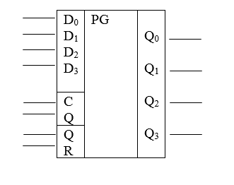
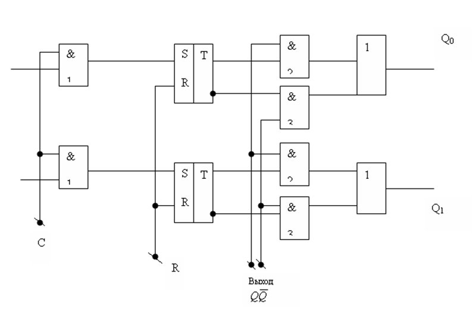
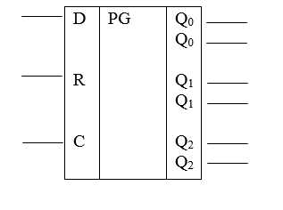
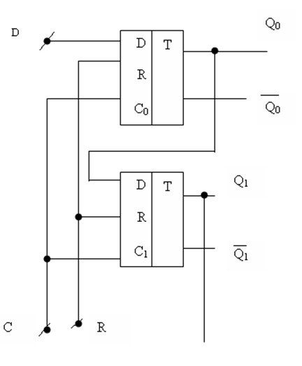
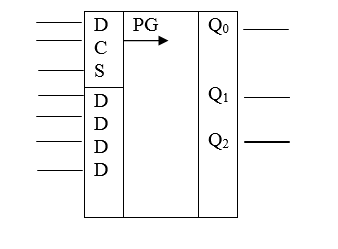
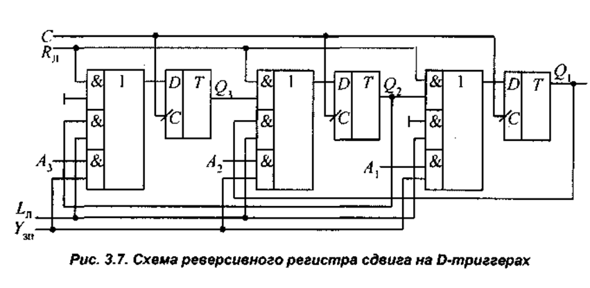
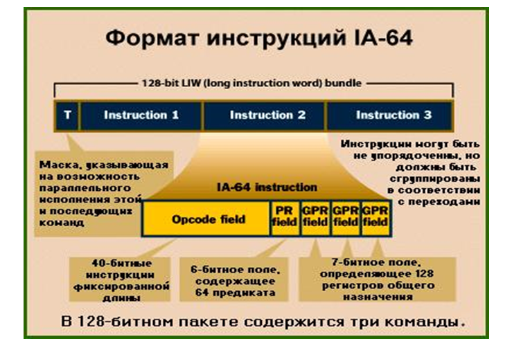

Регистры
Цель: изучение и использование регистров в современной ЭВМ.
План:
1. Общее понятия о регистрах
2. параллельный регистр
3. последовательный регистр
4. сдвигающий регистр
5. 64 разрядный регистр
Регистр это узел ЭВМ, представляющий собой упорядоченную совокупность электронных запоминающих элементов с системой управления входными и выходными сигналами.
Или Регистром называется совокупность из n одноразрядных элементов, предназначенных для хранения п-разрядных двоичных кодов.
Регистр (Register) ячейка памяти сохраняющая одно слово (8, 16 или 32 разряда). Регистры выполняются на элементах памяти (триггерах) и являются последовательными устройствами (с памятью). Совместное использование 8 триггеров позволяет запоминать 8 – разрядные двоичные числа. Загружаться и разгружаться регистры могут параллельно или последовательно.
Регистры созданы на основе двухступенчатых триггеров, которые используются для устойчивой работы.
Он предназначенный для выполнения следующих основных микроопераций над М- разрядным входным кодом:
1. Прием и хранение в регистре кода числа.
2. Передача числа из регистра в прямом или обратном коде.
3. Сдвиг хранимого регистре кода на заданное число разрядов влево или вправо.
4. Преобразование представления из параллельной формы записи в последовательную и наоборот при приеме или выдаче n- разрядного кода
Регистры выполняют и простейшие логические действия:
- Установку фиксированного кода
- Инверсию состояния
Регистры бывают трех типов:
1. Регистр параллельного действия
2. Регистр последовательного действия
3. Регистр последовательно- параллельного действия
Регистр параллельного действия


В регистре параллельного действия на n-разрядах ввод и вывод числа осуществляется параллельным способом причем число может быть передано в прямой и обратном кодах. Перед подачей числа все триггеры регистра устанавливаются в исходное, нулевое состояние. Затем на шины D0-D3 поступают разряды числа. Одновременно с ними на вход «С» подается стабилизирующий импульс разрешающий запись в регистр. Элементы «И» на входах (обоих), которых окажется «1» срабатывают и соответствующие триггеры регистра перейдут из нулевого состояния в единичное состояние. Записанные таким образом числа хранятся в регистре и могут быть выданы на выход Q в прямом коде через элементы И2 и в обратном коде через элементы И3 , число в регистре при считывании сохраняются. Поэтому его можно считывать многократно.
Регистры параллельного действия отличается высоким быстродействием, их используют в арифметических запоминающих и других устройствах ЭВМ.
Регистр последовательного действия

010101010111111

При подаче на вход R положительного импульса все триггеры регистра устанавливаются в нулевое состояние на вход D подается логический уровень равный старшему разряду числа. При подаче импульса напряжения на вход С (синхронизирующего импульса) первый триггер устанавливается в состояние, соответствующее уровню входа D и на выходе Q0 . Появляется сигнал, равный входу D. Далее на вход D подается следующим старшим разрядом разряд числа. При подаче на вход С второго перепада напряжения 1-ый триггер устанавливается в соответствие входу D, а триггер 2 –в соответствующее с логическим уровнем на входе Q0 Т.е. в соответствии с предыдущим состоянием триггера №1 и т.д. Таким образом 1-ый логический уровень, поданный на вход D после n-операций, окажется в энном триггере.
Регистр последовательно - параллельного действия


Работу регистра последовательно –параллельного типа рассмотрим на примере сдвигающего регистра. Для записи чисел в последовательной форме служит вход D.
D0-D3 –для записи в параллельной форме. Входом S определяется способ занесения чисел в регистр.
При подаче на вход S уровня соответствующего последовательному внесению информации в регистр – данный регистр работает как регистр последовательного действия.
При подаче на вход S обратного вышеуказанному уровню регистр работает как регистр сдвига с параллельной записью информации.
Сдвиги кодов в регистрах бывают:
- Логический сдвиг вправо (в сторону младших разрядов)
- Логический сдвиг влево (в сторону старших разрядов).
- Циклический сдвиг вправо и циклический сдвиг влево.
- Арифметический сдвиг по смещенному дополнительному коду вправо/ влево,
Логический сдвиг вправо (в сторону младших разрядов) и Логический сдвиг влево (в сторону старших разрядов). Оба сдвига не имеют арифметического смысла, и освобождающиеся при этом младшие и старшие разряды заполняются нулевыми значениями.
Циклический сдвиг вправо и циклический сдвиг влево. Они также не имеют арифметического смысла. Для их организации регистр охватывается цепями сдвига в замкнутое кольцо, благодаря чему при сдвиге на любое число разрядов информация, хранящаяся в регистре, не теряется, и путем сдвига в противоположном направлении расположение информации в регистре может быть полностью восстановлено.
Арифметический сдвиг по смещенному дополнительному коду вправо/ влево, эквивалентен умножению на целую отрицательную/ положительную степень двойки. При выполнении этих сдвигов освобождающиеся старшие числовые разряды регистра заполняются инверсным значением знакового разряда, а младшие – нулями, а при сдвиге влево в знаковый разряд записываются инверсные значения числовых разрядов.
Арифметический сдвиг по обратному коду вправо/ влево, эквивалентный умножению на целую отрицательную/ положительную степень двойки. При выполнении этих сдвигов освобождающиеся старшие и младшие разряды регистра заполняются значением знакового разряда.
ПРИМЕР
При переходе логического уровня на входе S на активизирующий параллельную запись информации данные с входов D0 - D3 записываются в регистр и появляются на соответствующих выходах Q0 - Q3. Затем должно последовать обратное переключение логического уровня на входе S. При подаче тактового импульса на вход С информация смешается на один разряд влево. Информация старшего бита без дополнительных связей теряется.
Также существуют реверсивные сдвиговые регистры. В них предусмотрен специальный вход «И» выбора направления сдвига информации в регистре. При определенном уровне на входе «И» информация сдвигается влево, при обратном - вправо.
Использование регистров в новых технологиях
Регистры 64-разрадного процессора Intel Разработчики процессоров стремятся создавать чипы, содержащие как можно больше функциональных узлов - что позволяет обрабатывать больше команд параллельно - но одновременно приходится существенно усложнять управляющие цепи для распределения потока команд по обрабатывающим узлам. На данный момент лучшие процессоры не могут выполнять более четырёх команд одновременно, при этом управляющая логика занимает слишком много места на кристалле.
Файлы регистров IA-64. В их число входят: 128 регистров общего назначения GR; 128 регистров с плавающей запятой FR; 64 регистра предикатов PR; 8 регистров перехода BR; 128 прикладных регистра AR; не менее 4 регистров идентификатора процессора CPUID; cчетчик команд IP, указывающий на адрес связки, содержащей исполняемую команду; регистр маркера текущего окна CFM, описывающий окно стека регистров и др.

Регистры CPUID являются 64-разрядными. В CPUID-регистрах 0 и 1 лежит информация о производителе, в регистре 2 находится серийный номер процессора, а в регистре 3 задается тип процессора (семейство, модель, версия архитектуры и т.п.) и число CPUID-регистров. Разряды регистра 4 указывают на поддержку конкретных особенностей IA-64, т.е. тех, которые реализованы в данном процессоре.
Прикладные регистры AR0-AR127 - специализированные (в основном 64-разрядные) регистры, применяемые в IA-64 и IA-32. AR0-7 называются регистрами ядра; запись в них привилегированна, но они доступны на чтение в любом приложении и используются для передачи приложению сообщений от операционной системы.
Среди других прикладных регистров укажем на AR16 (RSC) - регистр конфигурации стека регистров, используемый для управления работой "машиной" стека регистров IA-64 (RSE); AR17 (BSP), в котором находится адрес в памяти, где сохраняется положение GR32 в текущем окне стека; AR40 (FPSR) - регистр состояния для команд с плавающей запятой IA-64; AR44 (ITC) - интервальный таймер; AR64 (PFS) - регистр предыдущего состояния функции, куда автоматически копируются некоторые другие регистры при вызове подпрограмм; AR65 (LC), используемый для организации циклов со счетчиком, и, наконец, 6-разрядный регистр эпилога AR66 (EC). Ряд AR-регистров является фактически регистрами IA-32 (дескриптор сегмента кодов, дескриптор сегмента стека и др.).
64-разрядные регистры GR0-127 применяются не только для целочисленных операций IA-64; GR8-31 в режиме IA-32 используются также под целочисленные регистры и регистры селекторов и дескрипторов сегментов IA-32. GR0-31 называются статическими регистрами (GR0 всегда содержит 0), а GR32-127 - стекируемыми регистрами. Статические регистры "видны" всем программам. Стекируемые регистры становятся доступными в программной единице через окно стека регистров, включающее локальные и выходные регистры, число которых задается командой alloc.
82-разрядные регистры с плавающей запятой FR0-127 также подразделяются на статические (FR0-31, причем всегда FR0=0.0, FR1=1.0) и вращаемые (FR32-127). FR8-31 в режиме IA-32 содержат числа с плавающей запятой и мультимедийные регистры.
Вращение регистров является в некотором роде частным случаем переименования регистров, применяемого во многих современных суперскалярных процессоров с внеочередным спекулятивным выполнением команд. В отличие от них, вращение регистров в IA-64 управляется программно.
64-разрядные регистры переходов BR0-7 применяются для указания адреса перехода в соответствующих командах перехода (если адрес перехода не кодируется в команде явно). Регистры предикатов PR0-63 являются одноразрядными; в них помещаются результаты команд сравнения. Обычно эти команды устанавливают сразу два регистра PR в зависимости от условия - соответственно истинность условия и его отрицания. Такая избыточность обеспечивает дополнительную гибкость.
В отечественном микропроцессоре E2K предикатных регистров в два раза меньше. Хотя это позволяет хранить столько же условий, сколько в IA-64, в последней предикатные регистры применяются еще и для организации программно конвейеризованных циклов (Software Pipelining - SWP). Использование предикатных регистров - важнейшая особенность, кардинально отличающая IA-64 от всех других микропроцессоров, кроме E2K. PR0-15 являются статическими (PR0 всегда равен 1), а PR16-63 - вращаемыми. Статические предикатные регистры используются в командах условного перехода. Кроме того, почти все команды IA-64 могут быть выполнены "под предикатом".
Работа стеков регистра
Файл регистров GR отличается от FR и PR тем, что последние содержат фиксированные подмножества статических и вращаемых регистров, в то время как в файле GR вне подмножества статических регистров применяется стек регистров, и программной единице доступна лишь его часть - окно стека регистров. В отличие от статических регистров, стекируемое подмножество локально для любой программной единицы и может иметь размер от 0 до 96 регистров, начиная с GR32.
Использование этого механизма в IA-64 позволяет, как мы увидим, избежать накладных расходов, связанных с сохранением/восстановлением большого числа регистров при вызовах подпрограмм и возвратах из них (однако статические регистры при необходимости все-таки приходится сохранять и восстанавливать, явно кодируя соответствующие команды). Автоматическое сохранение или восстановление стекируемого подмножества регистров осуществляет RSE, и в программе об этом заботиться не надо. В режиме IA-32 работа с этим стеком регистров, естественно, отключается.
Мы до сих пор не рассматривали один из важнейших регистров IA-64 - 38-разрядный регистр CFM, в котором как раз сохраняется состояние "текущего" окна стека регистров. Как и другие маркеры окна, CFM содержит общий размер окна стека, число локальных регистров и (кратное 8) число вращаемых регистров в окне, а также 3 значения базы для переименования регистров - соответственно rrb.gr, rrb.fr и rrb.pr.
Итак, окно стека имеет две области переменного размера - локальную и выходную. Рассмотрим вызов процедур подробнее. При переходе типа "вызов процедуры" CFM вызывающей подпрограммы сохраняется в поле PFM (Previous Frame Marker) регистра PFS, и создается CFM вызываемой подпрограммы. Сразу после вызова размер локальной области вызываемой подпрограммы равен размеру выходной области вызывающей и перекрывается с ней. При этом стекируемые регистры автоматически переименовываются таким образом, что первый регистр выходной области вызывающей подпрограммы становится регистром GR32 вызываемой . Перекрытие их выходных областей позволяет эффективно передавать параметры через регистры.